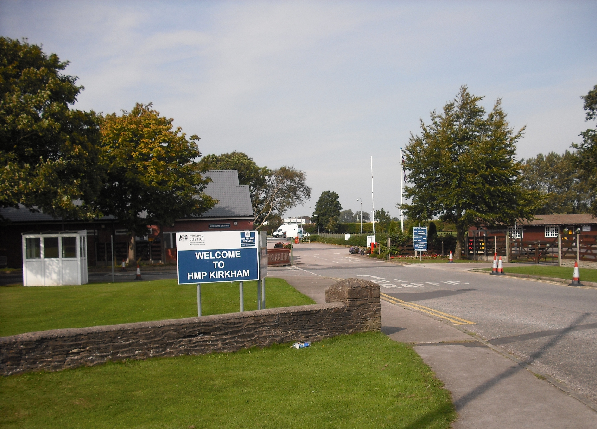

Visit to HMP Kirkham
- 🔐 On Wednesday 7th October, Tom visited HMP Kirkham to learn more about ROTL (Release on Temporary Licence) schemes - pathways into employment for people nearing the end of their sentence through paid and unpaid work placements.
- 🔐 A salutary statistic from the day: 1 in 4 adults of working age have a criminal record - a significant section of society, and rehabilitative work chimes strongly with our values at Chorlton Bikes.
- 🔐 We are exploring how this could work with Dave Nicholson and the Brewcycle group, who have a project based at St Margaret's Playing Fields.

Women in Cycling - Anna
- 🚴 On Friday 2nd October, Anna attended Women in Cycling at Stretford Public Hall.
- 🚴 It was a lovely morning meeting other women-led cycling groups, discussing the challenges we face and brainstorming solutions together.

AGM and election
- 📅 Another plug for our AGM / Open Social on 25th November at Dulcimer Bar in Chorlton, 7pm–9pm.
- 📅 We will share our experiences in 2026 and look ahead to what the future holds for Chorlton Bikes.
- 📅 We will be there from 6pm if anyone would like to talk to our directors about Chorlton Bikes and how to get involved.
- 📅 There will be light refreshments available, and the bar at Dulcimer for drinks.

Walk Wheel Cycle Trust - Transpennine Trail barriers
- 🛤️ We were recently contacted by Walk Wheel Cycle Trust (formerly Sustrans) to support their campaign to remove barriers from the Transpennine Trail, after successfully removing some from the Fallowfield Loop.
- 🛤️ These barriers often impede cargo bikes - and we have had feedback from local families who would like to use these routes on school runs.
- 🛤️ We have written in support of their campaign and are broadly supportive of anything that enables more families to cycle to school and work.

Bikes4Refugees
- 🚲 We continue to collect pre-loved bikes for the charity Bikes 4 Refugees.
- 🚲 Our amazing mechanic Dave refurbishes these bikes at a phenomenal rate, and we also help transport bikes between refurbishment and allocation.
- 🚲 Please note: we cannot allocate refurbished bikes straight to refugees or others in need. For allocation, contact info@rainbowhaven.org.uk.
- 🚲 We nominated both Dave and Lucy (whose energy drives the whole initiative) for a Best of Manchester award - because that is exactly what they are.
- 🚲 If you have a pre-loved bike you would like to donate, please get in touch.

Emmeline's Elves - Sunday 29th November, 10am–1pm
- 🎅 Our crack team of biking Elves will be out on their e-cargo sleighs on Sunday 29th November, 10am–1pm!
- 🎅 We are looking for donations of new toys, books, gift sets, chocolates/cakes/selection boxes or new pyjamas to help our friends at Emmeline's Pantry, who support families who have experienced domestic violence and food insecurity.
- 🎅 Please email us with what you would like to contribute and your address - and we will scramble the Elves to your door on the 29th!